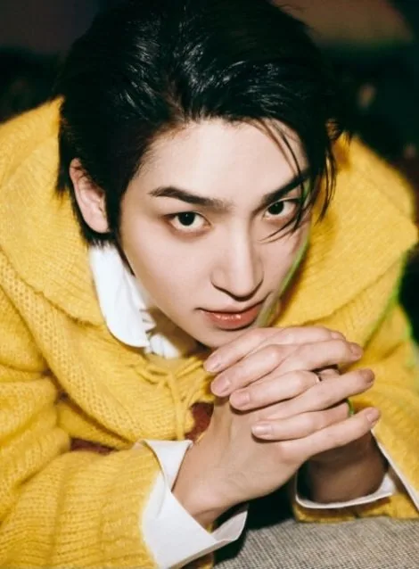
Sangyeon
Sangyeon (상연) · Leader, Main Vocalist · Coréen
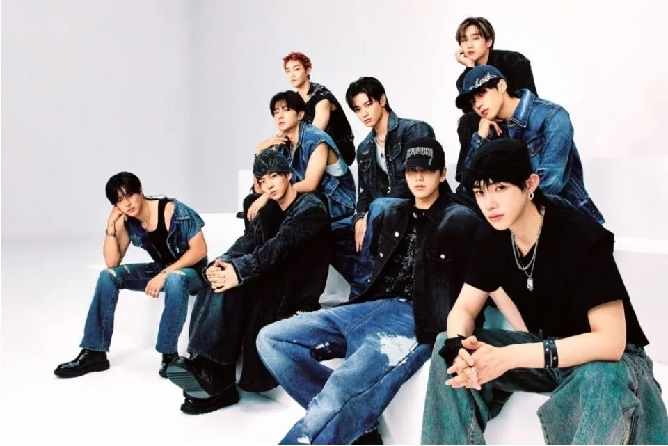
K-POP
Découvre THE BOYZ et les profils de ses membres sur IBASE Asian Pop.
Ouvrir la fiche interactiveHistoire : THE BOYZ (더보이즈) est un boy group sud-coréen qui a débuté le 6 décembre 2017 avec le mini-album « THE FIRST » (titre « Boy ») sous Cre.Ker Entertainment, puis IST Entertainment. Formé à l'origine de 12 membres, il en a compté 11 après le départ de Hwall le 22 octobre 2019 (problème de santé). Le contrat avec IST a pris fin en décembre 2024 et le groupe a rejoint ONE HUNDRED à la mi-décembre 2024 ; JuHaknyeon a quitté le groupe le 18 juin 2025. Le 19 mars 2026, il a été annoncé que le contrat avec ONE HUNDRED avait été résilié le 10 février 2026. Le 6 août 2026, THE BOYZ a annoncé poursuivre ses activités à 9 membres sous un nouveau label, 78 RECORDS, tandis que New quittait le groupe. Chaque membre est géré individuellement pour ses activités en solo (Namooactors, MANAGEMENT SEESUN, ACE FACTORY, AT AREA, GRID Entertainment). Leur salut officiel : « Best We THE BOYZ ! Hello, we are THE BOYZ ! »
Débuts : 6 décembre 2017 avec le mini-album « THE FIRST »
Agence : 78 RECORDS (avant : ONE HUNDRED, IST Entertainment, Cre.Ker Entertainment)

Sangyeon (상연) · Leader, Main Vocalist · Coréen
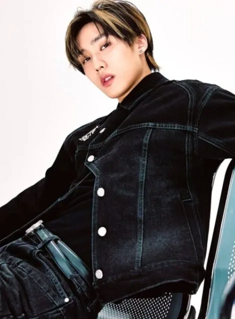
Jacob (제이콥) · Leader par intérim, Lead Vocalist, Sous-rappeur · Canadien
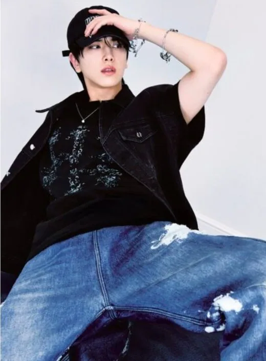
Younghoon (영훈) · Lead Vocalist, Visual · Coréen
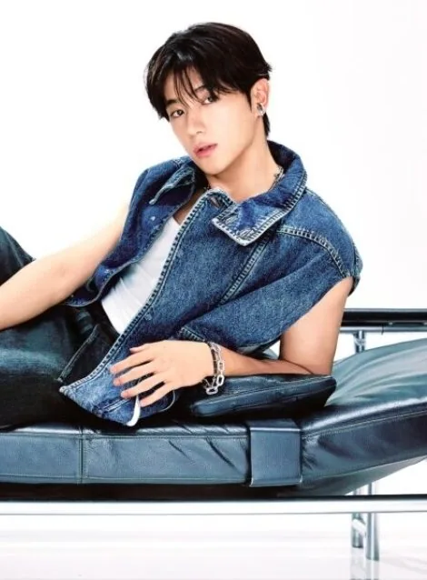
Hyunjae (현재) · Lead Vocalist, Lead Dancer, Visual · Coréen
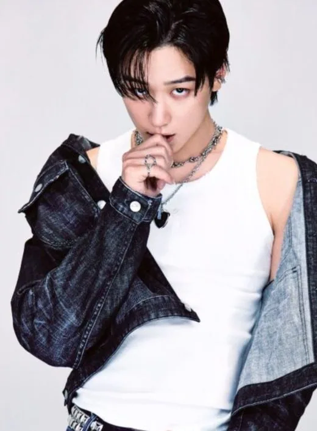
Juyeon (주연) · Main Dancer, Sous-vocaliste, Visual · Coréen
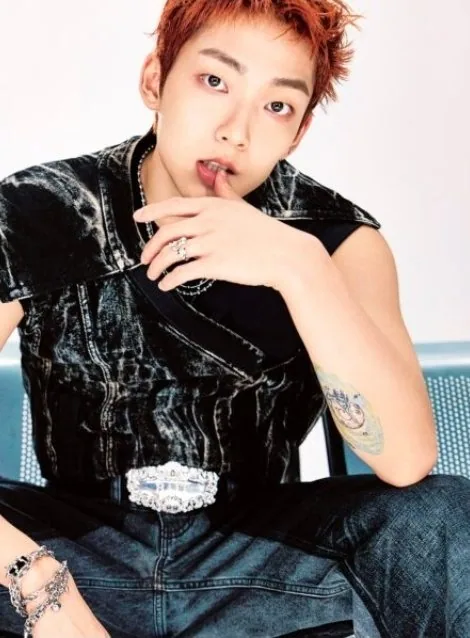
Kevin (케빈) · Main Vocalist · Coréen-Canadien
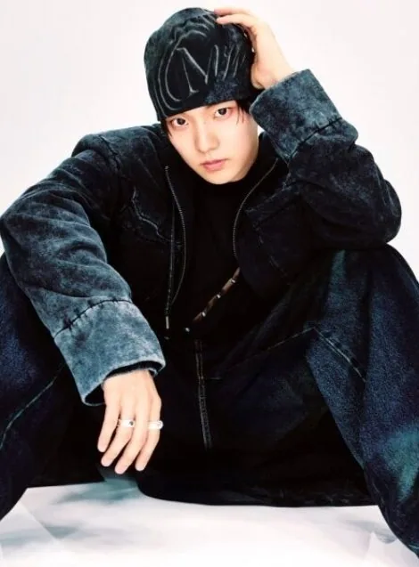
Q (큐) · Main Dancer, Sous-vocaliste · Coréen
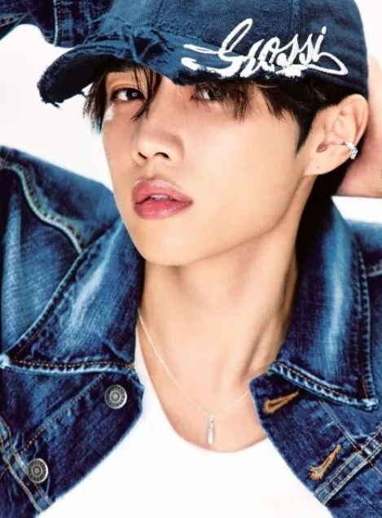
Sunwoo (선우) · Main Rapper, Lead Dancer, Sous-vocaliste · Coréen
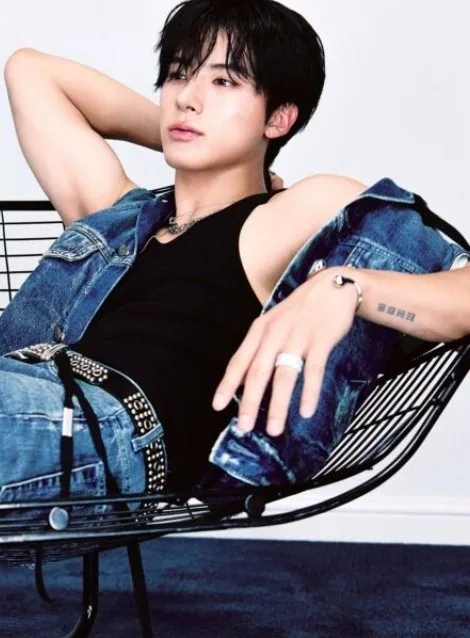
Eric (에릭) · Lead Rapper, Lead Dancer, Sous-vocaliste, Maknae · Coréen
Hwall (활) · Lead Dancer, Lead Rapper, Sous-vocaliste (ancien membre : a quitté THE BOYZ le 22 octobre 2019) · Coréen
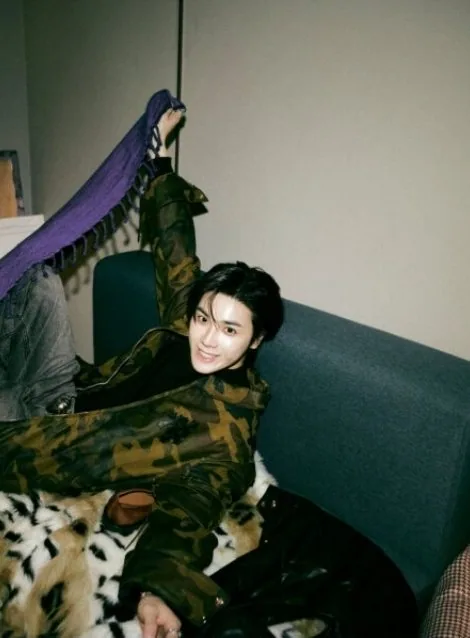
JuHaknyeon (주학년) · Lead Dancer, Sous-vocaliste, Sous-rappeur (ancien membre : a quitté THE BOYZ le 18 juin 2025) · Coréen
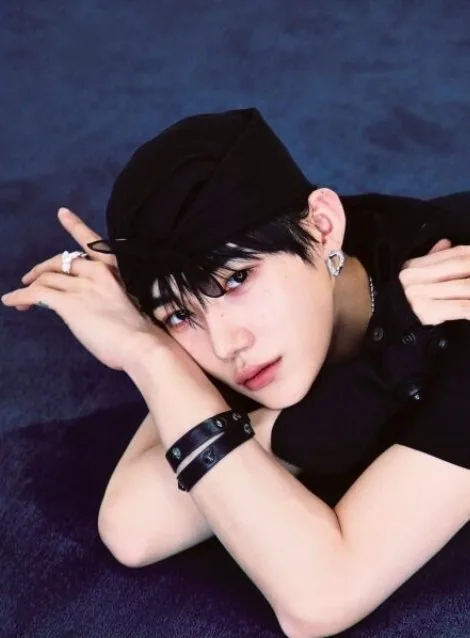
New (뉴) · Main Vocalist (ancien membre : a quitté THE BOYZ le 6 août 2026) · Coréen